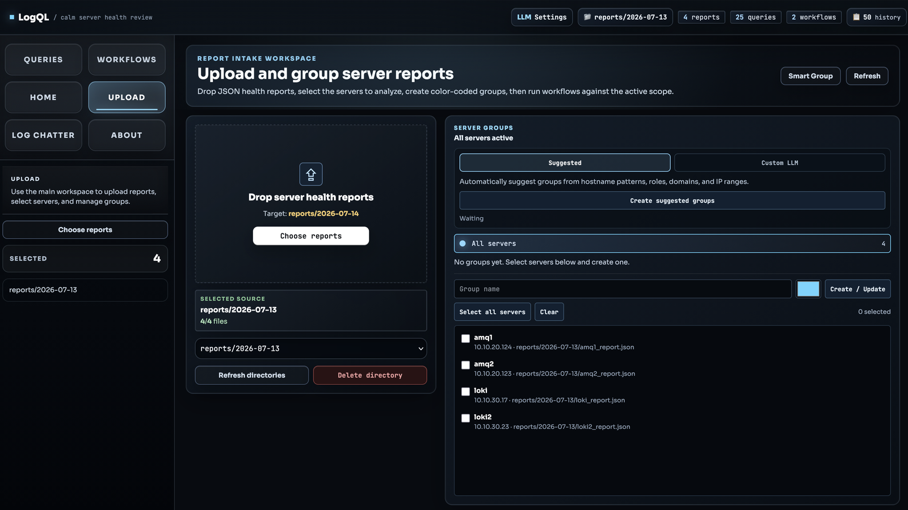
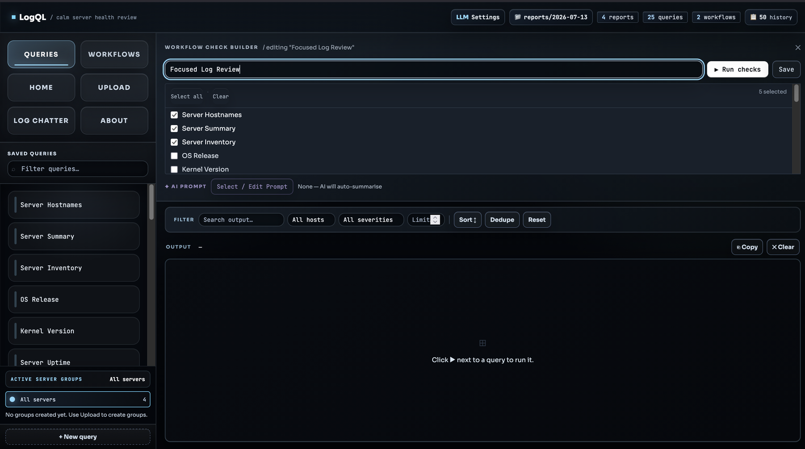
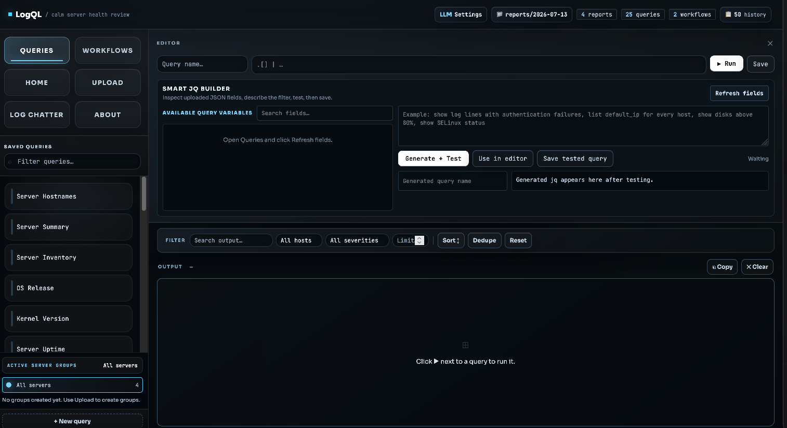
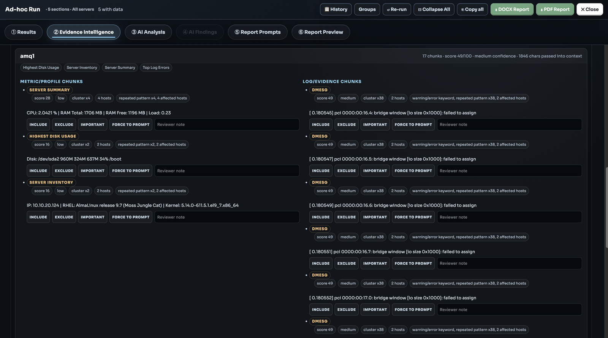
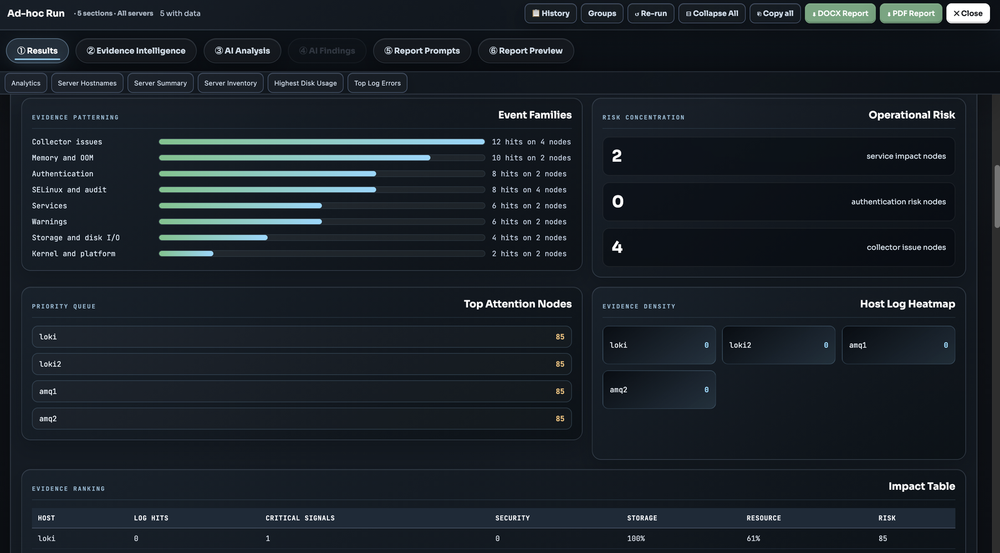
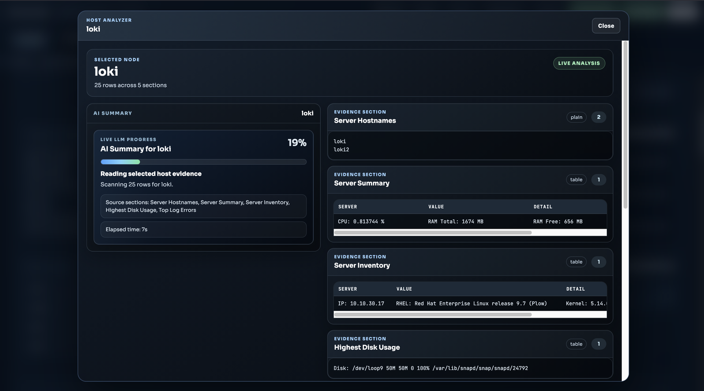
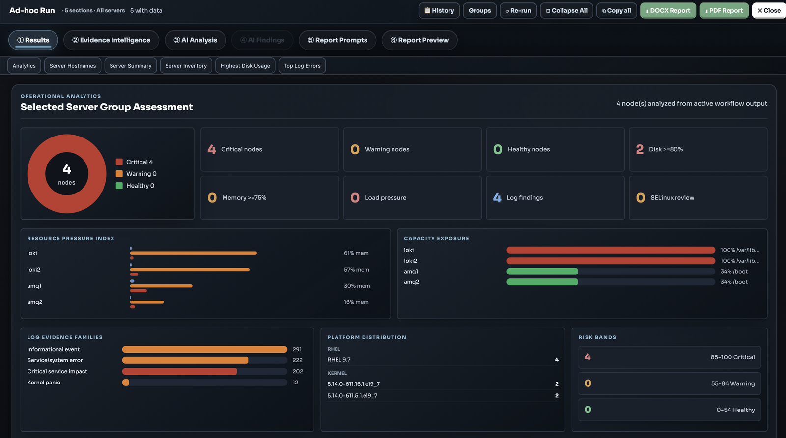

A small model on a laptop cannot read a 6 MB server report. It doesn't have to. If deterministic code first reduces the report to a few kilobytes of ranked, traceable evidence, a 2-billion-parameter model can explain it well enough to be useful, and nothing has to leave the building.
This post explains how I built that middle layer into LogQL-Interface, a small internal tool for reviewing server health checks. Every number below comes from one real report run through the tool.
Measured on one real report
The Problem
A customer asked for a health check across 150+ servers: database clusters, Java middleware and application nodes. Collection was already solved. An Ansible playbook pulled hardware, storage, services, SELinux, NTP and filtered messages/secure logs from each host and saved one JSON file per server. What we lacked was a review engine. Someone still had to read every file, and that week it was me.
The obvious shortcut, pasting reports into a public AI service, was off the table. These were banking-sector environments, and a health-check report is full of things policy doesn't allow to leave the network: hostnames, internal IPs, service accounts, log lines and topology clues. A model running locally keeps the data in place, but it brings two problems of its own: weaker reasoning, and a very small working memory.
Why Raw Data Breaks a Small Model
Language models read tokens (about 4 characters of English each), and they can only attend to a fixed number of them at once: the context window. Granite 3.1 2B was trained for a 128K window, but the runtime decides how much you actually get. Ollama allocates 4,096 tokens by default on machines with less than 24 GiB of VRAM, because the KV cache, the memory holding attention state, grows with every token you allow. Anything past num_ctx is silently cut off.
One host's log field vs. what the model can see
Estimates use ~4 characters per token. Raw logs tokenise worse than prose, so the real raw figure is higher.
logs.messages5,944,212 charsEverything right of the red line is truncated before the model sees it. Raising num_ctx helps only as far as your RAM allows, and quality still drops: models use information in the middle of long prompts noticeably worse than information at the start or end.
Size isn't the only problem. Look at what those 27,397 lines contain, and when each one was written:
99.7% of the log is one line, repeated
permission denied, exactly 720 per hourThe noise is a flat line. The things worth reading are moments, and they barely register in the volume.
Because the collector pre-filters with egrep fail|invalid|error, every line already matches an error keyword. Keyword search alone ranks nothing here.
Hand that to a 2B model and you get one of three outcomes:
- Truncation: the window fills up and the model never sees the end of the log.
- Domination: the repeated line drowns everything else, so the answer is "fix Promtail" and nothing more.
- Hedging: the model falls back to "monitor the system".
None of these are really the model's fault. The input was bad.
The Architecture: Reduce, Then Explain
Deterministic code decides what the model sees.
The model explains it.
A human approves it.
Every stage runs inside the local network. The only thing that crosses into the model is a small, task-specific evidence pack.
From server to report, without leaving the trust boundary
Blue = the evidence layer (the actual product). Green = the only stage that uses an LLM to read data. Click a stage to jump to its section.
1. Collect and Scope
Reports are uploaded into a dated directory such as reports/2026-07-13. Servers can be grouped manually, by suggested rules (hostname patterns, roles, domains, IP ranges), or by asking the local model to "group the application servers together". Grouping matters because every later stage runs against the active scope, not everything you uploaded.

reports/2026-07-13, with suggested or LLM-assisted server groups.Each report shares one schema, which is what makes the next step reliable:
{
"hostname": "loki.ocp.kuwaitnet.lab", "date": "2026-03-09",
"hardware": { "cpu_usage", "total_memory_mb", "available_memory_mb", ... },
"storage": { "disk_usage", "highest_disk_usage" },
"system": { "os_release", "kernel", "uptime", "last_boot" },
"services": { "selinux", "firewall", "ntp", "redhat_subscription" },
"network": { "default_ip", "all_ips", "network_errors" },
"performance": { "load_average" }, "processes": { ... },
"logs": { "messages": "<5.9 MB>", "secure": "<10 KB>" }
}2. Extract with jq
The first filter is jq, not AI. Each saved query is a small lens over the JSON (hostnames, inventory, disk, top log errors), and a workflow chains several lenses into one repeatable review. The "Focused Log Review" workflow turns the 6.1 MB Loki report into 24 rows.

That run taught me the most important lesson in the project. My first "Top Log Errors" query took the first 20 matching lines, and all 20 were the same Promtail error. The fix is to group first, then cap:
# Group log lines into patterns, then return the top 20 by frequency
.hostname as $h
| .logs.messages
| split("\n")
| map(select(length > 0)
| sub("^\\w{3} +\\d+ [\\d:]+ \\S+ "; "") # drop syslog prefix
| gsub("[0-9]+"; "<n>")) # mask numbers
| group_by(.)
| map({host: $h, count: length, pattern: .[0]})
| sort_by(-.count)
| .[:20]On the real report this returns 11 patterns in about 3.5 seconds, with the 27,310-line Promtail error as one row next to everything it used to hide.
Not everyone writes jq. The Smart JQ Builder lets a user describe the filter in plain language ("show disks above 80%"). The local model drafts the query, and the app runs it against the uploaded fields before it can be saved. The LLM writes the filter, never the finding, so a wrong guess fails visibly instead of producing a confident paragraph.

3. Normalise, Group and Score
Workflow output feeds Evidence Intelligence, the core of the tool. It splits rows into metric chunks (CPU, RAM, disk, inventory) and log chunks, then does what an experienced engineer does by instinct. It masks the parts that change, groups what's left into a log template (the same idea log-template miners such as Drain use), and ranks the result.
How 27,310 lines become one row
1 host · 8 Mar 00:00 → 9 Mar 13:55 · pattern 1 of 11
Raw lines differ only in their timestamp, PID and nanosecond ts.
Each chunk then gets a score from 0 to 100, built from explainable signals rather than model judgement: error keywords, how often a pattern repeats, how many hosts it affects, and utilisation thresholds such as disk ≥ 90%. These are the actual scores for the Loki run:
| Section | Score | Why it scored | Evidence |
|---|---|---|---|
| Top Log Errors | error keywordrepeated ×20 | promtail permission denied | |
| Highest Disk Usage | ≥ 90% used | /dev/loop0 100% | |
| Server Summary | context | CPU 0.6%, load 0.05, 693 MB free | |
| Server Inventory | context | RHEL 9.7, kernel 5.14.0-611.16.1 |
Notice the disk row: it scores high, but it's a false positive (explained below). That's why scoring alone isn't enough. Every chunk has four reviewer controls: Include, Exclude, Important and Force to prompt, plus a free-text note. This is where engineering knowledge enters the loop. One click excludes the snap loop devices, and one note ("squashfs, always 100%") stops the model drawing a false disk conclusion.


4. Build Task-Specific Prompt Packs
The model is never asked to "analyse this server". Each report section gets its own prompt pack containing only the evidence relevant to that question, plus source counts so every claim traces back to a row. The disk question gets disk rows; the conclusion gets the top-ranked findings plus the earlier sections and reviewer notes.
Every pack fits a 4K window
Characters of evidence per pack, with room left for the instructions and the answer.
This is not training. The model's weights never change. It is closer to retrieval-augmented generation (RAG), except the retrieval step is deterministic jq plus scoring rules instead of an embedding search, which makes it easy to audit:
| Fine-tuning | Typical RAG | LogQL-Interface | |
|---|---|---|---|
| Changes model weights | Yes | No | No |
| Needs GPU training time | Yes | No | No |
| How evidence is chosen | n/a (baked in) | vector similarity | jq + scoring + reviewer |
| Claims traceable to a source row | No | Partly | Yes |
| Improves over time via | retraining | better index | saved queries and reviewer decisions |
5. Local Inference and Human Review
The packs go to granite3.1-dense:2b on Ollama inside the private network: a 2.5B-parameter dense model built for summarisation and RAG-style tasks. The UI streams progress per host, then the output moves through AI Analysis → AI Findings → Report Prompts → Report Preview before export to DOCX or PDF. Nothing is final until a person has read it against the evidence beside it.


Worked Example: One Loki Server, End to End
The chain below follows the real Loki report through every stage. It plays on its own; click any stage or use Full screen to read the output at each step.
loki.ocp.kuwaitnet.lab, through the same chain
Shaped from the real Loki JSON report and the saved Focused Log Review workflow: hostname, inventory, summary, disk and real messages evidence.
Raw JSON
The input is a single Loki report with hardware, storage, system, service, network, process, and expanded log sections.
files/logql-loki-report.json
/dev/loop0 at 100%, which the reviewer marks as snap loop noise./var/log/messages (permission denied).Here is what a reviewer takes away, including what the model got right and what the evidence layer had to supply:
| Type | Finding | Action |
|---|---|---|
| Real issue | Promtail can't read /var/log/messages. It retried every 5 s for 38 hours, so Loki isn't receiving this host's syslog. | Grant read access (for example with an ACL). Check SELinux AVC denials, since the host is enforcing. Promtail has been end-of-life since 2 March 2026, so plan the move to Grafana Alloy. |
| Buried signal | 8 failed SSH password logins (5 ansible, 3 root) from an internal host, 11:45–11:50, about 20 minutes before the first collector run. | Probably credential setup for the run, but confirm it, and review PermitRootLogin. The capped query never surfaced this. |
| Noise | Twelve /dev/loop* mounts at 100%. Snap packages are read-only squashfs images, so they're always "full". | Exclude them. The real filesystems are healthy: / at 20%, /boot at 48%. |
| Self-noise | The collector's sudo egrep runs add 84 lines to messages and 71 to secure. | Make this a permanent exclude rule. |
| Context | CPU 0.6%, load 0.05, about 0.6–0.7 GB of 1.6 GB RAM available. | RAM is tight for a Loki and Grafana box, but it isn't the incident. |
Limits and What's Next
- The scores are heuristics. They are transparent and easy to tune, but a high score still needs a human. The loop device proved that.
- Cap after grouping, everywhere. Any query that truncates before grouping can hide the one line that matters.
- A 2B model still makes mistakes. It summarises grounded evidence well. It doesn't diagnose novel failures. Larger local models (8B and up) are a config change when hardware allows.
- Make noise rules first-class. Known false positives (snap loops, collector self-noise) should ship as reusable exclude rules, not one-off clicks.
- The name. I know. It has nothing to do with Grafana Loki's LogQL query language, which is awkward given the example above.
In sensitive environments, AI for infrastructure shouldn't start with a chatbot. It should start with evidence. Get the evidence right, and even a small private model earns its place in the workflow.
Glossary
| Term | Meaning |
|---|---|
| Token | The unit a model reads; about 4 characters of English prose, fewer for number-heavy logs. |
| Context window | Maximum tokens (prompt + answer) the model can attend to in one request. |
num_ctx | Ollama's runtime context size. Defaults to 4,096 on typical laptops; input beyond it is truncated. |
| KV cache | Per-token attention memory. It grows with context length, which is why bigger windows cost RAM/VRAM. |
| Grounding | Giving the model the evidence to answer from, so its claims can be checked against source rows. |
| Hallucination | A fluent but unsupported claim. It's most likely when evidence is missing, truncated or drowned in noise. |
| Log template | A log line with its variables masked, so repeated events collapse into one counted pattern. |
| Prompt pack | A task-specific evidence bundle for one report section, sized to fit the context window. |
| Trust boundary | The perimeter sensitive data must not cross; here, the local workspace and internal network. |